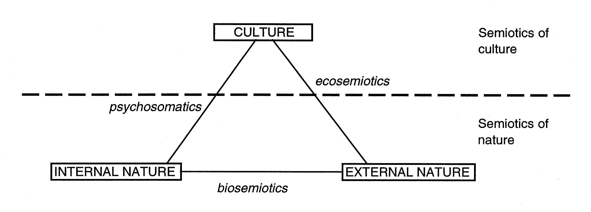

Over the years I have saved many, many images of different diagrams and graphs to my desktop because for some reason I just love to look at them. I like the overtly scientific aesthetic that they posses and I enjoy the different ways information about the world is represented, abstracted and visualized. Not coincidentally but I've also always had an affection for Information Art but that is not what this website is about!
In the Mapping Art section you will graphs and schematic representations of art and in the Diagrams as Art section you will diagrams of non-artistic phenomenon that have interesting aesthetic qualities in their own right.
